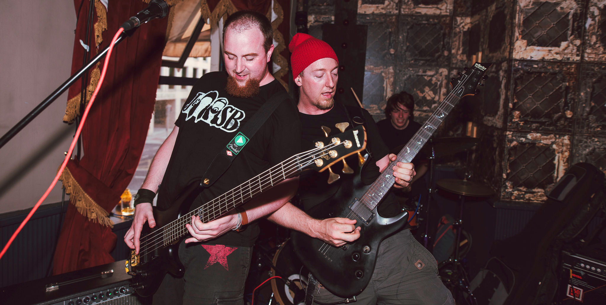
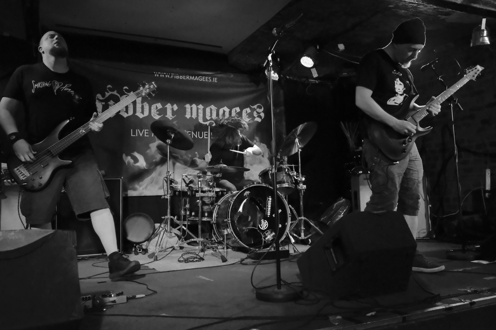
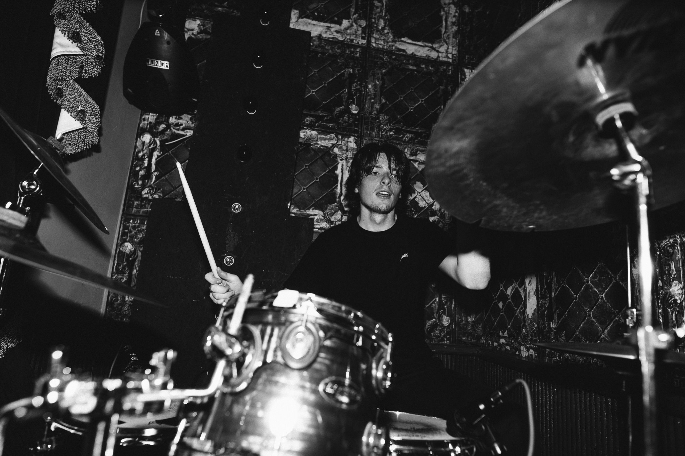
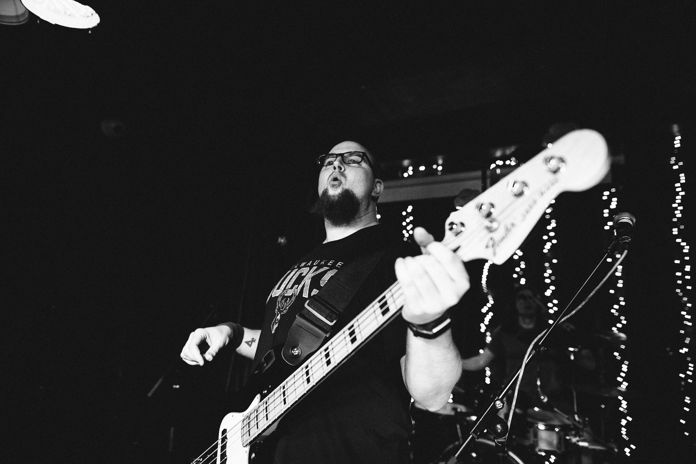
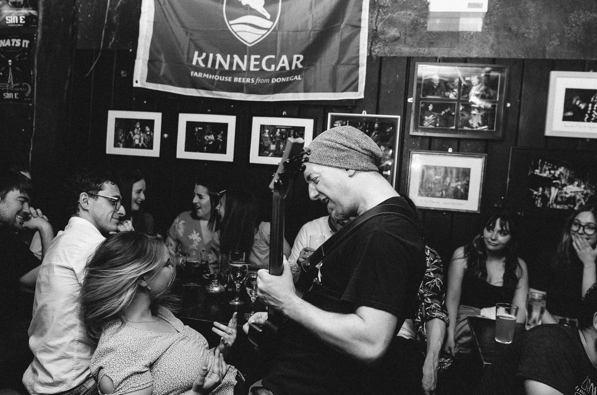

Risen from the ashes of failed experiments, faulty drummers, incompatible bass players, overzealous guitarists and impossible egos.
It's time for a new Ritual!
Who We Are...
Dublin band Ritual Effect fuses aspects of grunge and metal together with catchy riffs, fast paced songs, driving choruses and high energy shows. Since the band's inception in Late 2017, they have have written a massive amount of songs, clocked up a hefty amount of gigs, and have released a full-length debut album.
The band have appeared in venues all over Ireland and have become regulars on the roster in Ireland's premier rock bar, Fibber Magee's. They have been invited back everywhere that they have played, receiving enthusiastic feedback from far and wide. Their first assault on the live scene at the King Kong club in Dublin raised a full house of eyebrows, and crowd enthusiasm and interaction is peaking further with every show.
Each band member has previously written and recorded with different ensembles around the country but none could resist the call to join this new family. Each of the members has their own style and very different qualities which have been intricately wound into Ritual Effect.
Paul DOC
Paul is one of the greatest drummers in Dublin's live scene. He brings jazz, rock and metal elements to the table, resulting in heavy, pulsating, odd-metered madness performed with the highest precision.
Christopher Goggins
Christopher is a very dedicated and highly skilled bass player, who adds a penetrating tone to the mix and seeks crowd participation at every opportunity.
Moe Curtin
Front man, Moe, is charismatic with a touch of crazy. He performs with a fit of passion at every show, often finding himself buried in the crowd multiple times per night.
Ritual Effect are professional to work with, fun to hang out with and awesome to witness.
2019 saw the band enter the studio for their first serious project: their debut album, "Fossils".
This 15 track album is a heavy, melodic nod to their past and sets the pace for a high speed, full-on sonic assault on the future.
With their song bank close to full storage, a follow up mini-album is currently under construction and will hit the shelves in early-mid 2022.
There is no limit to what this band is capable of in the rehearsal room, on stage or on tape.
Come join the Ritual and embrace the Effect!